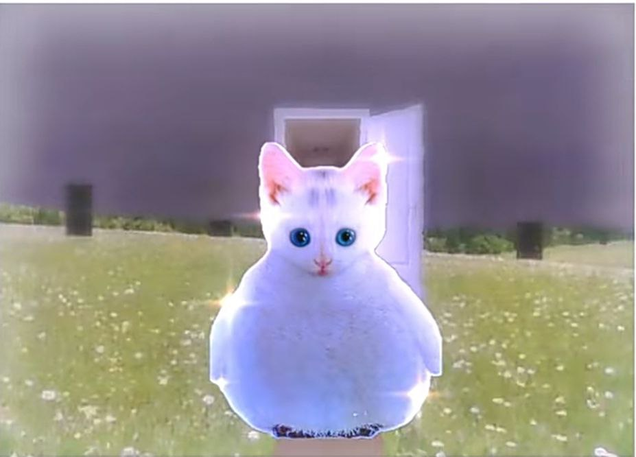

Каюков Александр Игоревич

Кроме программирования увлекаюсь
рисованием и немного дизайном постеров
в фотошопе и других программах. Большую
часть жизни рисовал с помощью пикселей,
но недавно перешел на обычный рисунок.
Примеры моих работ приведу здесь, ради интереса